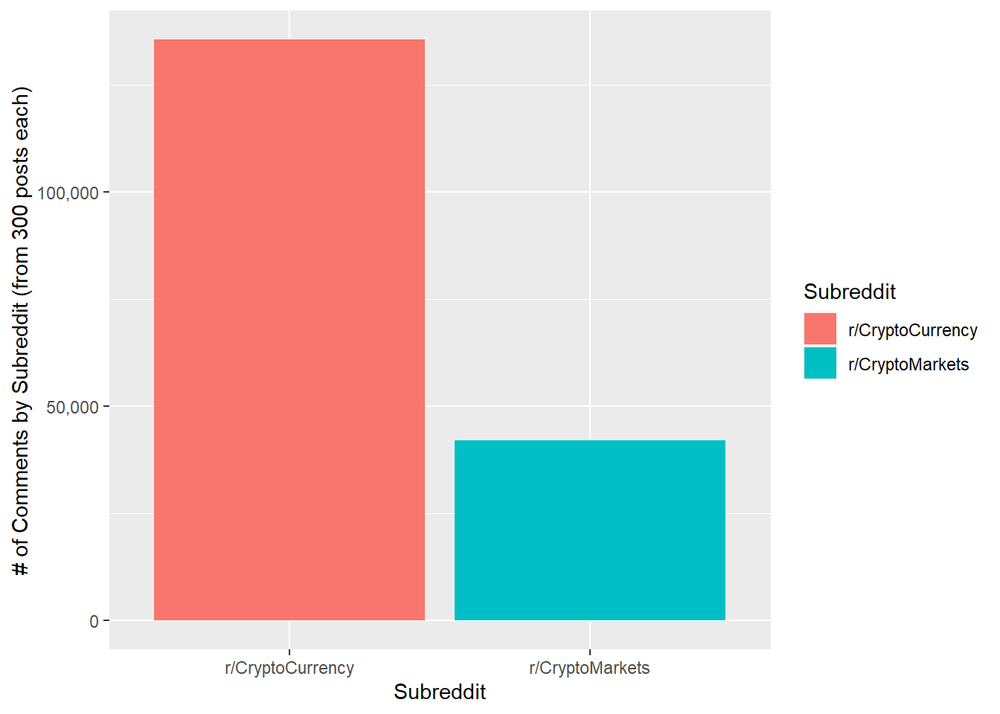
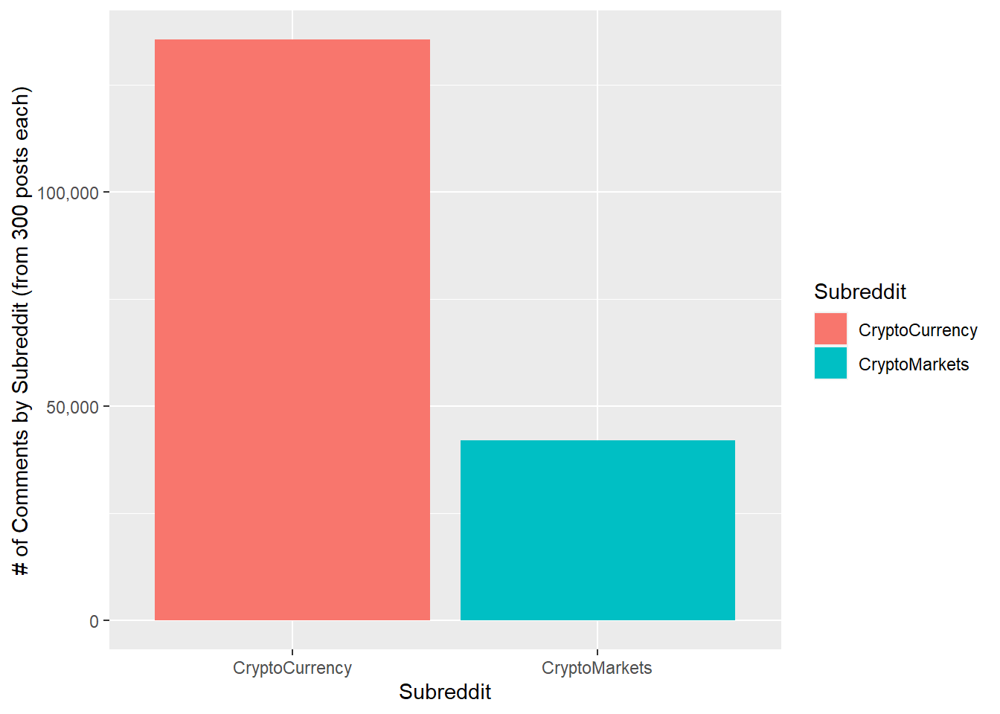

Chapter 2 Data Import and Clean
library(tidyverse)
library(tidytext)
library(textclean)
library(dplyr)
library(stringr)
library(knitr)
library(wordcloud)
library(kableExtra)
library(DT)
library(tidygraph)
library(ggraph)
library(tm)knitr::opts_chunk$set(message = FALSE, warning = FALSE, echo = TRUE)
# set to TRUE to run this on only one reference file
debugging <- FALSE
# this will expect the file or files to be in a subdirectory with the following name
refsource <- "MungingProj2"
dataDir <- "Proj2Data"
workingDir <- refsource
# prefixes for all File reads and writes
# titles for tables
titletext <- "RedditCrypto"
srs = c("CryptoCurrency","CryptoMarkets")
`%notin%` <- Negate(`%in%`)2.1 Import Data
subm_fnames <- list.files(dataDir, pattern = "*_submissions.csv", full.names = TRUE)
comm_fnames <- list.files(dataDir, pattern = "*_comments.csv", full.names = TRUE)
subr_fnames <- list.files(dataDir, pattern = "*_subreddit.csv", full.names = TRUE)
for (i in 1:length(subm_fnames))
assign(srs[i], read.csv(subm_fnames[i]))
SubmData<- rbind(CryptoCurrency, CryptoMarkets)
for (i in 1:length(comm_fnames))
assign(srs[i], read.csv(comm_fnames[i]))
CommData<- rbind(CryptoCurrency, CryptoMarkets)
for (i in 1:length(subr_fnames))
assign(srs[i], read.csv(subr_fnames[i]))
SubrData<- rbind(CryptoCurrency, CryptoMarkets)2.2 Data Collection
submnums <- table(SubmData$subreddit)
SubmNums <- as.data.frame(submnums, .name_repair = "minimal")
colnames(SubmNums)[1] <- "Subreddit"
ggplot(SubmNums, aes(x = Subreddit, y = Freq, fill = Subreddit)) + geom_bar(stat = "identity") + scale_y_continuous(name="# of Submissions by Subreddit", labels = scales::comma)
c <- CommData
commnums <- table(c$subreddit)
CommNums <- as.data.frame(commnums, .name_repair = "minimal")
colnames(CommNums)[1] <- "Subreddit"
ggplot(CommNums, aes(x = Subreddit, y = Freq, fill = Subreddit)) + geom_bar(stat = "identity") + scale_y_continuous(name="# of Comments by Subreddit (from 300 posts each)", labels = scales::comma)
| X | title | subscribers | created | public_description |
|---|---|---|---|---|
| 0 | Cryptocurrency News & Discussion | 1117855 | 2013-03-11 17:51:50 | The official source for CryptoCurrency News, Discussion & Analysis. |
| 0 | r/CryptoMarkets | 236835 | 2013-11-12 18:50:17 |
FOREX community for cryptocurrencies. Tags: mt gox bitcoin, long term potential, open source exchange, low inflation rate, demand and price, technical analysis, fundamentals, Bitcoin, Ethereum, Litecoin, Monero, Dash, Augur, token, volume, oscillator, RSI, stochastic, trend, sentiment, strategy, scam, coin, coinmarketcap, altcoin, Peercoin, script, blockchain, PoW, PoS, Proof of Work, |
Submissions from each subreddit:
Comments in each subreddit:
2.3 Clean
To ensure that our data accurately represent activity within the communitas, we want to ensure that each observation is a unique instance of engagement. Reposts tend to be common on reddit, so using a distinct() function on the text column will remove any duplicate posts. Additionally, any posts that are removed from the subreddits return an NA value in user column, thus we can remove deleted comments by filtering out all non user == NA.
#Clean
Encoding(SubmData$text) <- "UTF-8"
Submissions <- SubmData %>%
group_by(user) %>%
filter(!is.na(user)) %>% # Take out deleted comments
ungroup() %>%
distinct(text, .keep_all = TRUE) #remove duplicate submissions
paste("Removed", nrow(SubmData) - nrow(Submissions),"submissions.")## [1] "Removed 14 submissions."2.3.1 Submissions
The analysis of langauge begins by quantifying the presence of words in each Subm, through the process of tokenization. Tokens are discrete strings of words or characters that can be isolated as n-grams; with n pertaining to the number of words in each token. Tokens are pulled from the body of text that is most informative for the purposes of analysis. For submissions, the informative text is the title of the submission, which contains information on topics; whereas, for comments, the informative text is the comment itself.
data(stop_words)
SubmissionTkns <- Submissions %>%
group_by(subreddit) %>%
unnest_tokens(word, text) %>%
ungroup()
#G2Subm <- Submissions %>%
# group_by(subreddit) %>%
# unnest_tokens(bigram, text, token = "ngrams", n = 2, n_min = #2) %>% #repeat above as bigram
# ungroup()As part of the tokenization process for submissions, we remove stop words (e.g. “and”, “a”, “the”) because we are interested in using our tokens to identify prevalent topics of discussion and attitudes in the religiously affiliated social clusters. In contrast, stop words are not removed from text data in comments because they are useful in the analysis of linguistic sentiment and behavior. #### 1-grams (Clean)
#Create object for numbers, so that we can remove them from the data
nums <- SubmissionTkns %>% filter(str_detect(word, "^[0-9]")) %>% select(word) %>% unique() #Source: https://richpauloo.github.io/2017-12-29-Using-tidytext-to-make-word-clouds/
SubmissionTkns <- SubmissionTkns %>%
anti_join(stop_words, by = "word") %>%
anti_join(nums, by = "word") %>%
filter(!grepl("_", .$word))
G1Subm <- SubmissionTkns2.3.1.1 2-grams (Clean)
2-gram code is not used in analysis due to unsolved cleaning error.
#G2Subm_separated <- G2Subm %>% #Separate bigrams to remove stopwords and transitional phrases
# separate(bigram, c("word1", "word2"), sep = " ") #run boolean functions for cleaning on `word1` and `word2`
#G2Subm_filtered <- G2Subm_separated %>%
# filter(!word1 %in% stop_words$word) %>% #remove stop words
# filter(!word2 %in% stop_words$word) %>%
# filter(!word1 == "NA") %>% #remove anomylous strings
# filter(!word2 == "NA") %>%
# filter(!word1 %in% nums) %>% #remove numbers
# filter(!word2 %in% nums)
#G2Subm <- G2Subm_filtered %>%
# unite(bigram, word1, word2, sep = " ")#reunify cleaned word columns
#G2Subm <- G2Subm[!grepl("_", G2Subm$bigram),]
#rm(G2Subm_separated)
#rm(G2Subm_filtered)2.3.2 Count
Following tokenization, the presence of each n-gram is tallied within each communitas. The tallies are then sorted to show what the most frequently occuring words are in each category.
2.5 Export
2.6 Works Cited
Boe B (2014). PRAW: The Python Reddit API Wrapper. 2012-, https://github.com/praw-dev/praw/ [Online; accessed 2017-09-29].
Silge J, Robinson D (2016). “tidytext: Text Mining and Analysis Using Tidy Data Principles in R.” JOSS, 1(3). doi: 10.21105/joss.00037, http://dx.doi.org/10.21105/joss.00037.
## [1] 164800 8
2.4 Comments
The cleaning and tokenization process for comments is similar to that of submissions; however, a few extra steps must be taken considering the casual and conversational nature of reddit comments.
NEED TO DO: Additionally, the number of comments on each submission varies, so it will be important to standardize word counts across subreddits..
2.4.1 Clean
2.4.2 Tokenize
2.4.2.1 1-grams
2.4.2.2 2-grams (Clean)
2-gram code is not used in analysis due to unsolved cleaning error.
2.4.3 Count